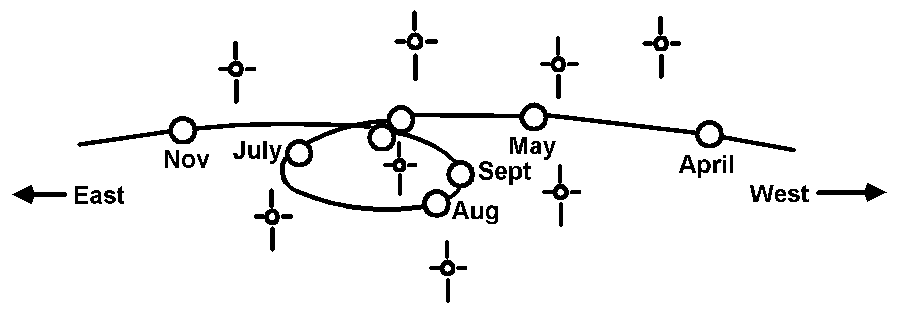

 |
| Figure 5-1 In plotting the course of the planets, ancient astronomers noticed that in addition to an overall eastward motion in the course of a year, planets also "wander" by changing directions and looping backwards in a westward direction. The number of these retrograde motions varies depending on the planet. |